Character record
角色档案
- 姓名
- 娜蒂娅·萨多娃 Nadia Sadova
- 性别
- 女性
- 身高
- 162 cm
- 年龄
- 27 岁
- 称号
- 「两衡之间」
- 地区
- 至冬 Snezhnaya
- 元素
- 冰 Cryo / Stellar Linchpin
- 武器
- 法器 Catalyst
- 身份
- 民间异常现象记录员、野外调查研究者
- 命之座
- 双衡仪座
「两衡之间」
在雪原上记录无法被称量之物的人，也在不知不觉间成为了记录中的第三个对象。
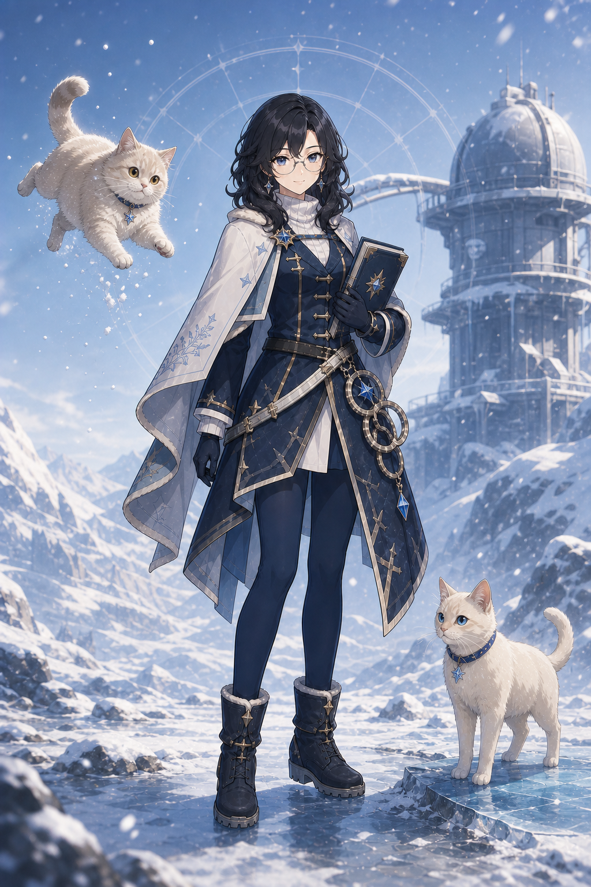
她先确认身边的重量，再让风场开始工作。点击播放，查看娜蒂娅与两只猫的登场动作。
她擅长记录异常，却不急着把异常恢复成“正常”。
面对最违反常识的事情，她的第一反应通常不是惊叫，而是把眼镜推回去，再测一次。
她会在正式报告里写“同行个体 A”和“同行个体 B”，在私人笔记里却写下普莎与伊嘉的名字。
她一直以为自己只是观察者，直到第三条曲线也出现在记录里。
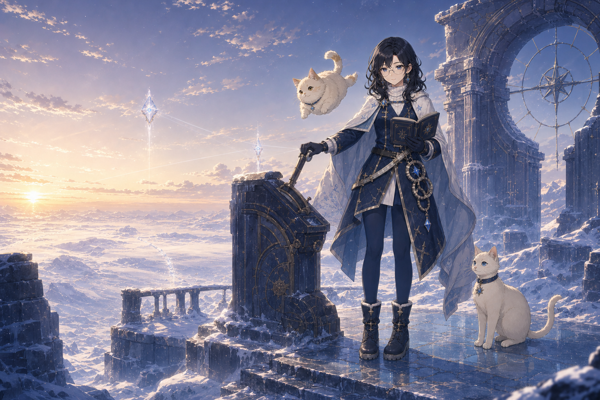
冰晶、城影与飞散的记录页，见证她把一次异常写成一段仍在继续的旅程。
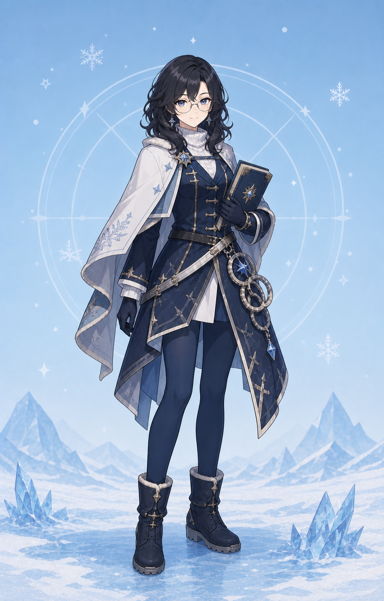
她翻开记录册，普莎与伊嘉便各自回到自己的轨道；轻与重不必相同，也可以并肩前行。
蓝墨、奶白与少量金色线条，保留她在观察、测量与陪伴之间的三个瞬间。
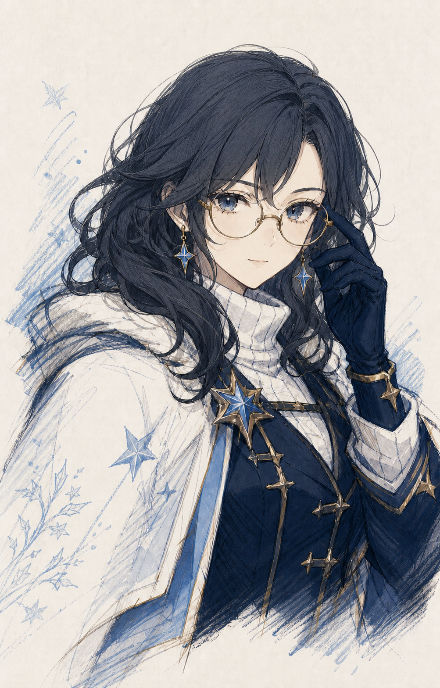
她把视线从异常移回记录，也把自己留在画面里。
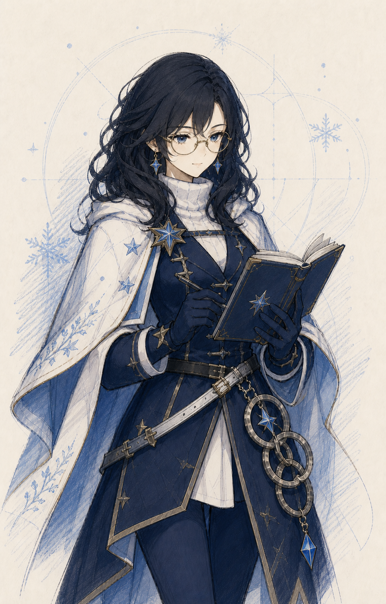
她给下一次测量留下位置，也给不确定性留下被看见的机会。
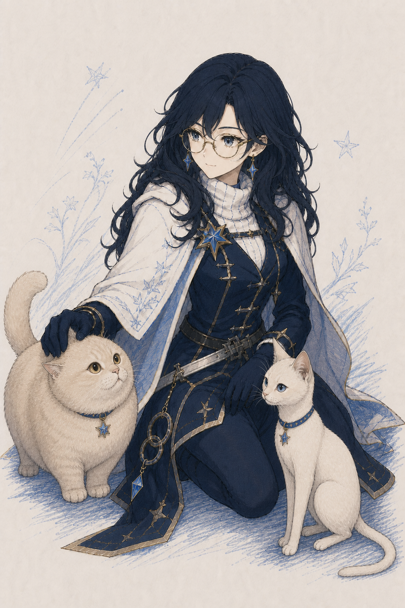
普莎的圆厚与伊嘉的细长并不互相抵消，正好构成她的衡标。
它们是真实的家猫，不是使魔，也不是元素生命。只是和世界的锚定方式发生了改变。
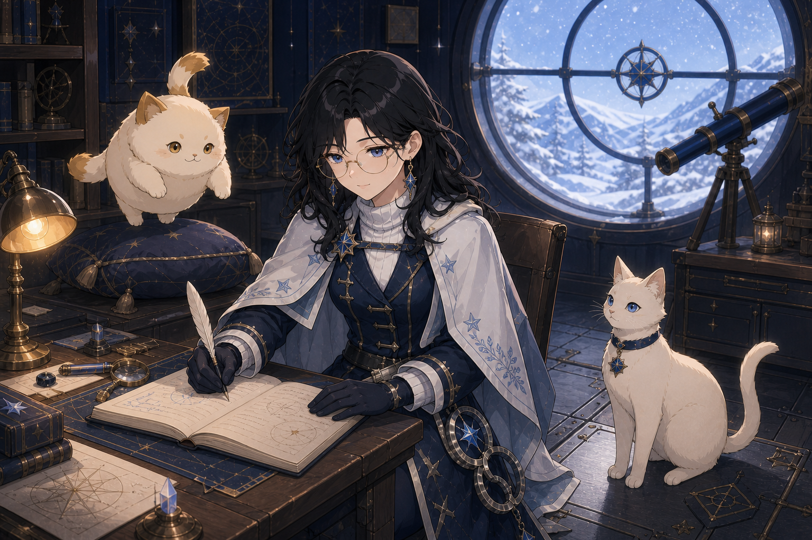
圆润、奶油金、琥珀眼。它看起来像一团很有分量的绒毛，实际上可能被风慢慢带走。长命锁与安全牵引绳，首先是为了防止它飘离地面。
修长、象牙色、冰蓝眼。它走路依旧轻巧，却会让薄冰细裂、木板下陷。它已经适应自己的状态，只有第一次尝试抱起它的人还没有。
“重”不是猫的真实质量，“轻”也不是失去身体，而是锚定关系在接触和测量时表现出的负荷。
手动播放 · 保留视频环境音 · 对应角色语音在语音库单独试听
她先看向普莎、停笔并夹住记录册，再扣上牵引绳；普莎被风托起，伊嘉走到她的膝侧。
她原本单手去抱伊嘉，随后蹲下改用双手抱起；普莎安静地坐在背景垫子上。
反应把衡标推向轻端或重端；再次施放战技与爆发负责主动回中。试着完成一次端点到归衡的循环。

双相巡衡从归衡位置开始。Stellar Swirl 将 H 推向轻端，Stellar-Conduct 将 H 推向重端；再次施放战技或施放爆发，可以主动把非零 H 带回中央。零点测区只会在巡衡仍存在时建立。
归衡：H = 0，等待选择路线。
打开记录册，两只猫进入巡衡。技能本身提供后台冰元素协同；普莎负责牵引，伊嘉负责压制与重端护持，反应只负责选择路线。
先把非零 H 归零；巡衡仍在时建立至多 12 秒的零点测区。主响应发生时，另一只猫提供较弱的伴随响应，让轻中有重、重中有轻。
从端点完成完整归衡后，轻与重会在短时间内共同稳定战场；她把“失衡再回中”转化为队伍收益。
她并不负责决定至冬的最终命运。她只负责让三个生命继续好好生活。
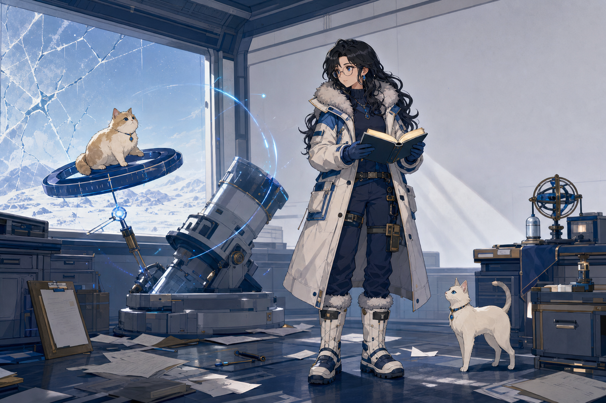
娜蒂娅过去一直把自己记作观察者，把普莎和伊嘉记作两个样本。事故后的许多年里，两只猫适应了现在的生活，她也逐渐停止使用“恢复”这个词，改用“稳定”。
直到最近，异常再次开始变化。旧记录显示，设施从来没有真正测量过两只猫的全部极限。她重新翻看第一页，终于发现自己遗漏了一个对象。
一只猫被暴风送上屋顶，另一只猫让旧木板发出危险的呻吟。重新运行的旧观测设施，逼她回答复原究竟是为了两只猫，还是为了让自己安心。
拒绝强制复原，稳定现在的三者。她没有得到“治好它们”的答案，但她得到了继续和它们一起生活的方法。
每一条命之座，都让“失衡”更接近一种可以共同生活的秩序。
第一条：不要相信眼睛
更快进入轻端或重端观测。
第二条：重新称量
强化轻相牵引与重端护持。
第三条：记录直到一致
元素战技等级提高。
第四条：误差从不是零
校准窗口延长，并以每 6 秒一次的回能改善循环。
第五条：零点只是起点
元素爆发等级提高。
最后一条：我们三个都在这里
零点测区内伴随响应提高至主响应的 75%、完整归衡伤害提高 50%，并加快主动回中的节奏。
严谨记录之外，她仍然会被猫毛、风和一只太重的猫打断。
“这个我还没有证据。”
“记录，并不是为了证明自己最开始是对的。”
“以前我一直觉得自己只是观察者。后来发现，第三条曲线原来是我的。”
普通话语音 · 点击试听 · 不自动播放
你好。娜蒂娅，做一些不太适合写进普通生态报告里的调查。
普莎，先站稳。伊嘉，等一下……我再测一次。
风向变了。普莎，回来。别担心，我抓住你了。
记录册里又有一根猫毛。……算了，继续。
今天也是稳定状态。下次抱你之前，我会先准备好。
普莎，伊嘉——开始记录。
轻端响应。普莎，慢一点。
重端响应。伊嘉，落点确认。
从一端回到中央。很好，归衡。
重新归零。误差确认——开始校准。
轻与重，都记录好了。
记录……还没有完成。
这份读数值得带回去。先别让猫碰到。
看起来很有分量，对吧？我第一次也是这么认为的。
第一次见伊嘉的人，通常会先问：这么瘦，应该很轻吧？我一般建议他们自己试一下。
如果只能让其中一只恢复正常，我不会选择谁。这个问题从一开始就错了。
以前我一直觉得自己只是观察者。后来发现，第三条曲线原来是我的。
记录，并不是为了证明自己最开始是对的。
异常并不等于错误。很多时候，它只是我们还没有找到正确的解释。
生日快乐。重量已经确认过，不会太重。……里面也没有猫。至少刚才没有。
她的声音总在结论之前停一下，像是在给风和猫留出改口的机会。
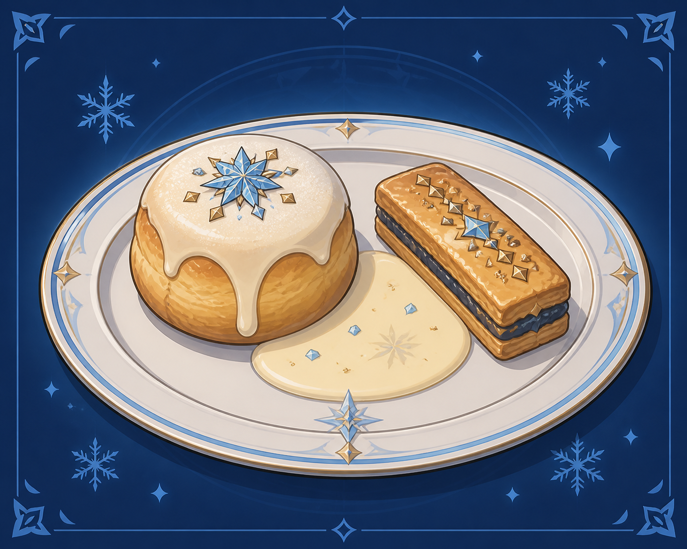
至冬风格的暖烤点心与热奶油酱。盘子两侧分别放着圆形和细长的小点心，外观与实际的蓬松度、重量恰好相反。
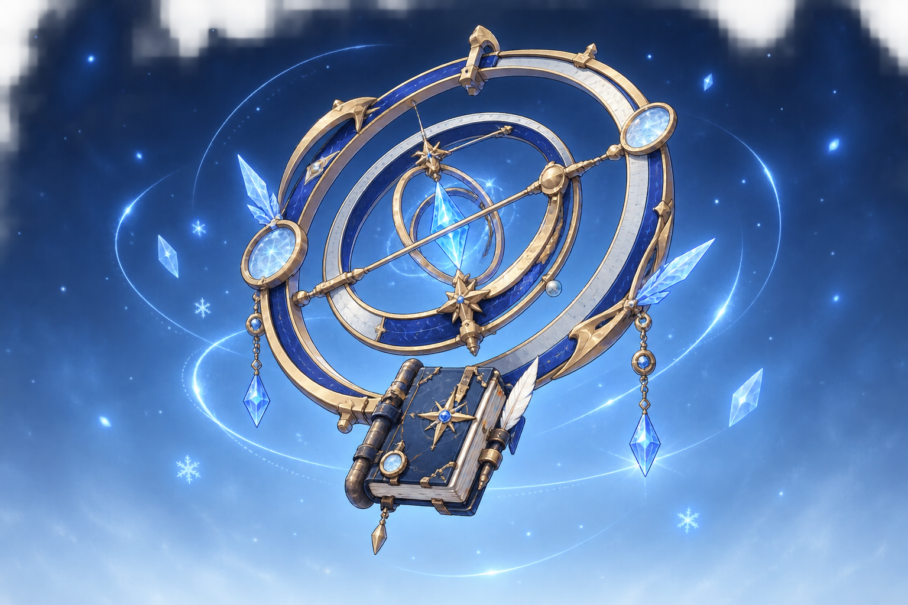
一本会自行翻页的野外调查记录册，与两组悬浮测量环组成的组合式法器。攻击时，刻度在空气中形成冰晶坐标。
她更像在校准装置，而不是挥舞武器。

左右两端不必同时归零，中央晶体只负责记录它们之间正在发生的关系。
倾斜不是故障，是下一次测量的起点。
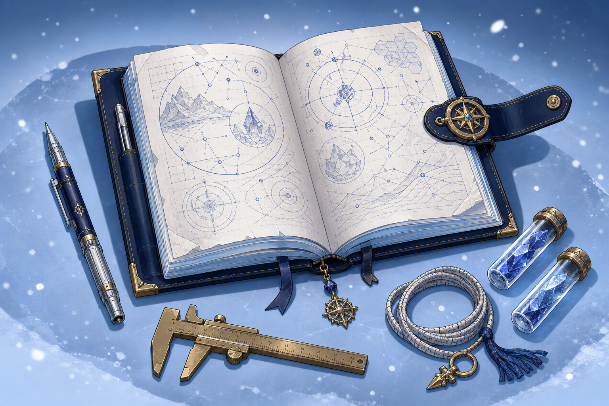
深蓝封皮、冰蓝页面、罗盘扣与随身测量工具。页面记录的是曲线、风向和承重变化，而不是为了证明某个结论。
记录仍在继续。
娜蒂娅是借用《原神》世界观语汇创作的个人同人角色；本页只介绍核心体验，详细数值规划集中在独立玩法规格页，并非实际游戏数值。